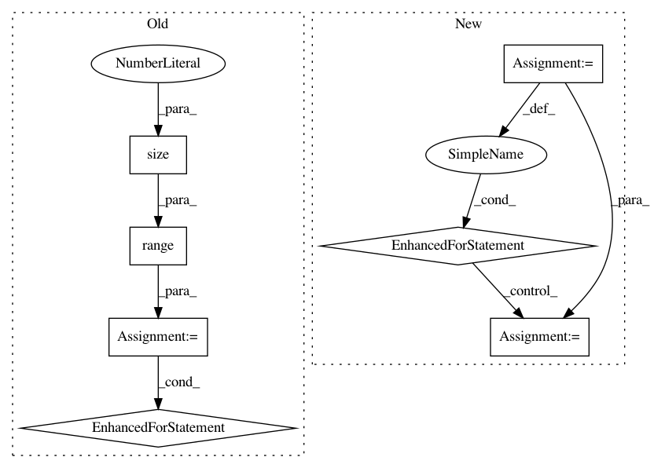

5ad7a33a04d8829ad3439b5f9390bd136105f986,allennlp/training/metrics/bleu.py,BLEU,_get_modified_precision_counts,#BLEU#Any#Any#Any#,77
Before Change
clipped_matches = 0
total_predicted = 0
for batch_num in range(predicted_tokens.size(0)):
predicted_row = predicted_tokens[batch_num, :]
reference_row = reference_tokens[batch_num, :]
predicted_ngram_counts = self._ngrams(predicted_row, ngram_size)
reference_ngram_counts = self._ngrams(reference_row, ngram_size)
for ngram, count in predicted_ngram_counts.items():
clipped_matches += min(count, reference_ngram_counts[ngram])
total_predicted += count
return clipped_matches, total_predicted
def _get_brevity_penalty(self) -> float:
if self._prediction_lengths > self._reference_lengths:
After Change
total_predicted = 0
from allennlp.training.util import ngrams
for predicted_row, reference_row in zip(predicted_tokens, reference_tokens):
predicted_ngram_counts = ngrams(predicted_row, ngram_size, self._exclude_indices)
reference_ngram_counts = ngrams(reference_row, ngram_size, self._exclude_indices)
for ngram, count in predicted_ngram_counts.items():
clipped_matches += min(count, reference_ngram_counts[ngram])
total_predicted += count
return clipped_matches, total_predicted
def _get_brevity_penalty(self) -> float:
if self._prediction_lengths > self._reference_lengths:
In pattern: SUPERPATTERN
Frequency: 3
Non-data size: 7
Instances
Project Name: allenai/allennlp
Commit Name: 5ad7a33a04d8829ad3439b5f9390bd136105f986
Time: 2020-05-28
Author: tobiasr@allenai.org
File Name: allennlp/training/metrics/bleu.py
Class Name: BLEU
Method Name: _get_modified_precision_counts
Project Name: OpenNMT/OpenNMT-py
Commit Name: b87368e1e7fd832b505db9cc08015ac7af8f95de
Time: 2016-12-23
Author: jvanamersfoort@twitter.com
File Name: VAE/main.py
Class Name:
Method Name: train
Project Name: OpenNMT/OpenNMT-py
Commit Name: b87368e1e7fd832b505db9cc08015ac7af8f95de
Time: 2016-12-23
Author: jvanamersfoort@twitter.com
File Name: VAE/main.py
Class Name:
Method Name: test